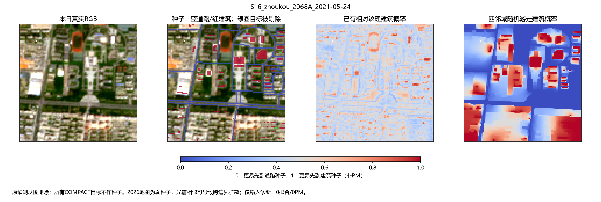
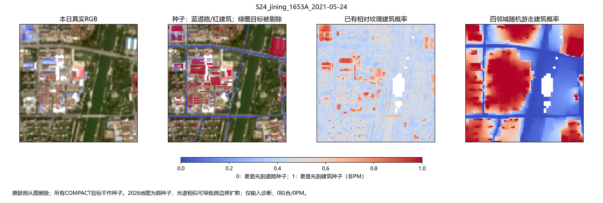
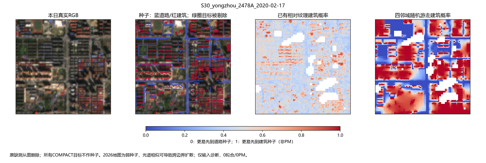
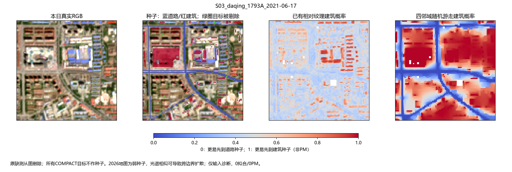

12个预定真实场景，177个COMPACT目标全部从种子中剔除，0拟合、0PM、0新Xp。原valid缺测从图删除，单位四带谱形决定四邻接边权。图建筑概率代表首先到建筑种子的概率，不是地物真值。
周口风险点建筑概率0.00558，济宁0.43231，永州混合格0.58798；同场部分未播种建筑覆盖目标仍高于0.96。存在局部信息收益，但阳泉原30对象158被赋低建筑概率，是可能过保护亮目标的反例。
短报告与编号校正说明 · 固定参数与公式 · 原30可用子集 · 固定风险点 · 官方随机游走文档 · Grady 2006原论文




原30评价对象ID与DOMAIN对象ID不同；最终表已按原评价mask重建，只修汇总，图与概率未改变。2026地图弱种子、光谱混合和无种子孤岛仍限制该方法。